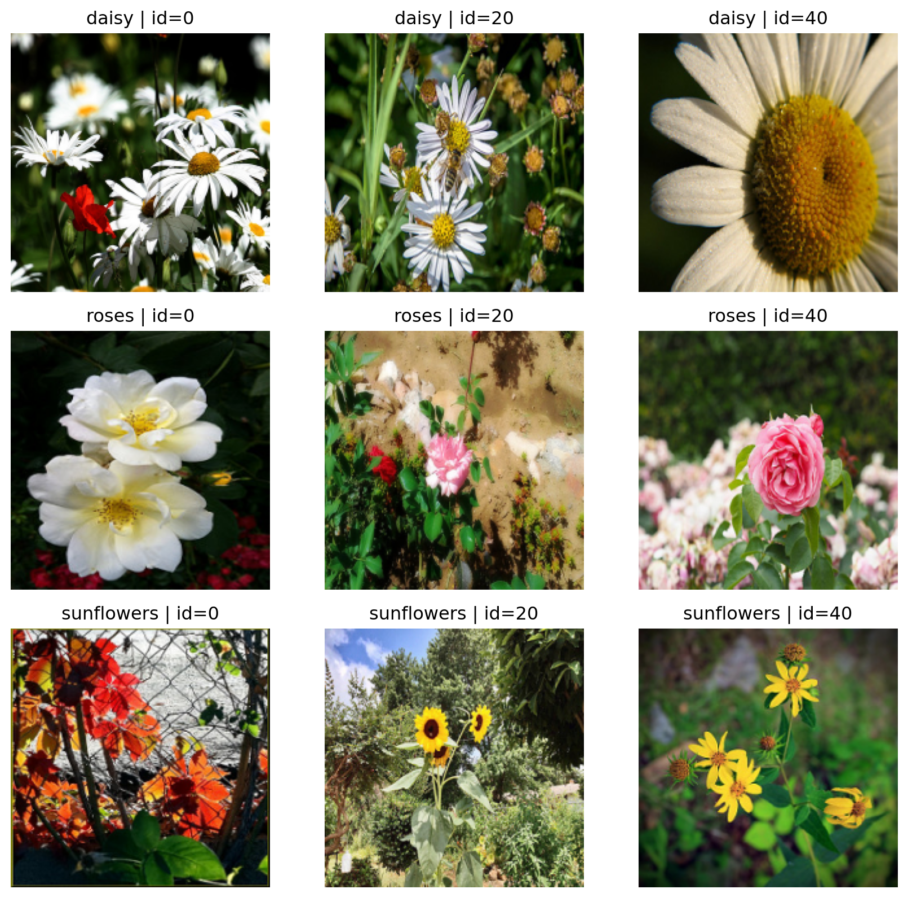
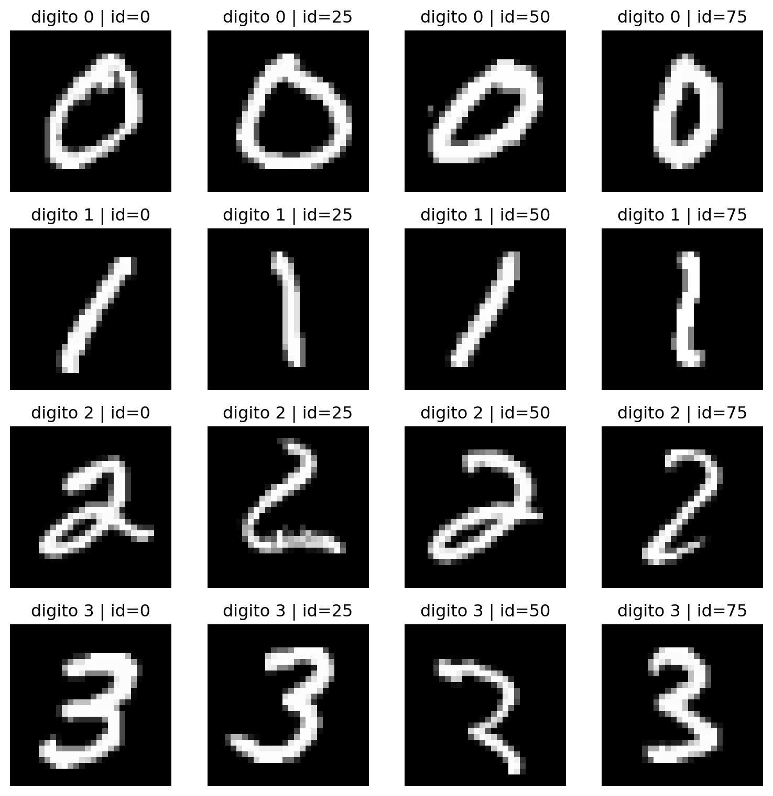

from pathlib import Path
import urllib.request
import tarfile
import random
import cv2
import numpy as np
import pandas as pd
import matplotlib.pyplot as plt
from scipy.stats import skew
from skimage.feature import graycomatrix, graycoprops
from sklearn.model_selection import train_test_split
from sklearn.pipeline import Pipeline
from sklearn.preprocessing import StandardScaler
from sklearn.linear_model import LogisticRegression
from sklearn.metrics import accuracy_score, classification_report
from sklearn.datasets import fetch_openmlEjemplo Real Clase 1: Uso Concreto de GLCM, Hu y Momentos de Color
Objetivo del ejemplo
Este material muestra casos concretos y reproducibles con datos reales:
- Momentos de color para diferenciar categorias de flores por paleta cromatica.
- GLCM para distinguir textura de petalos y fondo.
- Momentos de Hu para reconocer forma en digitos manuscritos (MNIST).
Se usan dos fuentes publicas:
- Flowers dataset de TensorFlow (
flower_photos.tgz). - MNIST desde OpenML.
0. Librerias
1. Descargar y preparar dataset de flores
DATA_DIR = Path("datos_ejemplo")
FLOWERS_DIR = DATA_DIR / "flower_photos"
FLOWERS_URL = "https://storage.googleapis.com/download.tensorflow.org/example_images/flower_photos.tgz"
def ensure_flowers_dataset(url=FLOWERS_URL, out_dir=DATA_DIR):
out_dir.mkdir(parents=True, exist_ok=True)
archive_path = out_dir / "flower_photos.tgz"
if not FLOWERS_DIR.exists():
if not archive_path.exists():
urllib.request.urlretrieve(url, archive_path)
with tarfile.open(archive_path, "r:gz") as tar:
tar.extractall(path=out_dir)
ensure_flowers_dataset()
FLOWERS_DIRWindowsPath('datos_ejemplo/flower_photos')def load_flower_paths(classes=("daisy", "sunflowers", "roses"), max_per_class=150, seed=42):
rng = random.Random(seed)
paths = []
labels = []
for cls in classes:
cls_dir = FLOWERS_DIR / cls
imgs = [p for p in sorted(cls_dir.glob("*")) if p.suffix.lower() in {".jpg", ".jpeg", ".png"}]
rng.shuffle(imgs)
imgs = imgs[:max_per_class]
paths.extend(imgs)
labels.extend([cls] * len(imgs))
return paths, np.array(labels)
paths_flowers, y_flowers = load_flower_paths(max_per_class=140)
len(paths_flowers), pd.Series(y_flowers).value_counts().to_dict()(420, {'daisy': 140, 'sunflowers': 140, 'roses': 140})Vista rapida de imagenes del dataset de flores
# IDs fijos por clase (posiciones dentro de la lista ordenada de archivos)
FLOWER_SAMPLE_POS = {
"daisy": [0, 20, 40],
"roses": [0, 20, 40],
"sunflowers": [0, 20, 40],
}
def show_flower_samples(paths, labels, sample_pos=FLOWER_SAMPLE_POS):
classes = sorted(np.unique(labels))
per_class = max(len(v) for v in sample_pos.values())
fig, axes = plt.subplots(len(classes), per_class, figsize=(3.0 * per_class, 2.8 * len(classes)))
if len(classes) == 1:
axes = np.array([axes])
for i, cls in enumerate(classes):
cls_paths = sorted([p for p, y in zip(paths, labels) if y == cls], key=lambda p: p.name)
picks = []
for pos in sample_pos.get(cls, []):
if 0 <= pos < len(cls_paths):
picks.append(cls_paths[pos])
for j in range(per_class):
ax = axes[i, j]
if j < len(picks):
img_bgr = cv2.imread(str(picks[j]))
img = cv2.cvtColor(img_bgr, cv2.COLOR_BGR2RGB)
img = cv2.resize(img, (200, 200), interpolation=cv2.INTER_AREA)
ax.imshow(img)
ax.set_title(f"{cls} | id={sample_pos.get(cls, [])[j]}")
ax.axis("off")
plt.tight_layout()
plt.show()
show_flower_samples(paths_flowers, y_flowers)
2. Funciones de descriptores
def read_rgb(path, size=(160, 160)):
img_bgr = cv2.imread(str(path))
if img_bgr is None:
raise ValueError(f"No se pudo leer: {path}")
img_rgb = cv2.cvtColor(img_bgr, cv2.COLOR_BGR2RGB)
if size is not None:
img_rgb = cv2.resize(img_rgb, size, interpolation=cv2.INTER_AREA)
return img_rgb
def extract_color_moments(image_rgb):
feats = []
for idx in range(3):
channel = image_rgb[:, :, idx].astype(np.float64).ravel()
feats.extend([
channel.mean(),
channel.std(ddof=0),
skew(channel, bias=False),
])
return np.nan_to_num(np.array(feats, dtype=float), nan=0.0, posinf=0.0, neginf=0.0)
def extract_glcm_features(image_rgb, levels=32):
gray = cv2.cvtColor(image_rgb, cv2.COLOR_RGB2GRAY)
q = (gray / 256 * levels).astype(np.uint8)
q = np.clip(q, 0, levels - 1)
glcm = graycomatrix(
q,
distances=[1, 3],
angles=[0, np.pi / 4, np.pi / 2, 3 * np.pi / 4],
levels=levels,
symmetric=True,
normed=True,
)
props = ["contrast", "dissimilarity", "homogeneity", "ASM", "energy", "correlation"]
feats = []
for prop in props:
vals = graycoprops(glcm, prop)
feats.extend(vals.ravel().tolist())
return np.array(feats, dtype=float)
def extract_hu_from_gray(image_gray):
blur = cv2.GaussianBlur(image_gray, (5, 5), 0)
_, mask = cv2.threshold(blur, 0, 255, cv2.THRESH_BINARY + cv2.THRESH_OTSU)
moments = cv2.moments(mask)
hu = cv2.HuMoments(moments).flatten()
hu_log = -np.sign(hu) * np.log10(np.abs(hu) + 1e-12)
return np.nan_to_num(hu_log, nan=0.0, posinf=0.0, neginf=0.0)3. Caso real 1: Momentos de color en flores
Pregunta concreta: “Podemos separar flores por su distribucion cromatica global?”
def build_matrix_from_paths(paths, extractor):
rows = []
for p in paths:
img = read_rgb(p)
rows.append(extractor(img))
return np.vstack(rows)
X_color = build_matrix_from_paths(paths_flowers, extract_color_moments)
X_train, X_test, y_train, y_test = train_test_split(
X_color, y_flowers, test_size=0.25, random_state=42, stratify=y_flowers
)
pipe_color = Pipeline([
("scaler", StandardScaler()),
("clf", LogisticRegression(max_iter=3000)),
])
pipe_color.fit(X_train, y_train)
y_pred_color = pipe_color.predict(X_test)
acc_color = accuracy_score(y_test, y_pred_color)
acc_color0.6666666666666666print("Accuracy color moments:", round(acc_color, 4))
print(classification_report(y_test, y_pred_color))Accuracy color moments: 0.6667
precision recall f1-score support
daisy 0.59 0.66 0.62 35
roses 0.71 0.77 0.74 35
sunflowers 0.71 0.57 0.63 35
accuracy 0.67 105
macro avg 0.67 0.67 0.67 105
weighted avg 0.67 0.67 0.67 105
4. Caso real 2: GLCM en flores
Pregunta concreta: “Si el color se parece entre clases, la textura aporta separacion adicional?”
X_glcm = build_matrix_from_paths(paths_flowers, extract_glcm_features)
X_train, X_test, y_train, y_test = train_test_split(
X_glcm, y_flowers, test_size=0.25, random_state=42, stratify=y_flowers
)
pipe_glcm = Pipeline([
("scaler", StandardScaler()),
("clf", LogisticRegression(max_iter=3000)),
])
pipe_glcm.fit(X_train, y_train)
y_pred_glcm = pipe_glcm.predict(X_test)
acc_glcm = accuracy_score(y_test, y_pred_glcm)
acc_glcm0.4857142857142857print("Accuracy GLCM:", round(acc_glcm, 4))
print(classification_report(y_test, y_pred_glcm))Accuracy GLCM: 0.4857
precision recall f1-score support
daisy 0.56 0.51 0.54 35
roses 0.35 0.37 0.36 35
sunflowers 0.56 0.57 0.56 35
accuracy 0.49 105
macro avg 0.49 0.49 0.49 105
weighted avg 0.49 0.49 0.49 105
5. Caso real 3: Hu en MNIST (forma)
Pregunta concreta: “Cuando la forma domina, Hu captura senales utiles?”
mnist = fetch_openml("mnist_784", version=1, as_frame=False)
X_mnist = mnist.data.astype(np.float32)
y_mnist = mnist.target.astype(str)
# Subconjunto para que la practica sea rapida
keep_digits = {"0", "1", "2", "3"}
mask = np.array([yy in keep_digits for yy in y_mnist])
X_mnist = X_mnist[mask][:8000]
y_mnist = y_mnist[mask][:8000]
# IDs fijos por digito (posiciones dentro de cada subconjunto por clase)
MNIST_SAMPLE_POS = {
"0": [0, 25, 50, 75],
"1": [0, 25, 50, 75],
"2": [0, 25, 50, 75],
"3": [0, 25, 50, 75],
}
def show_mnist_samples(X, y, sample_pos=MNIST_SAMPLE_POS):
digits = sorted(np.unique(y))
per_digit = max(len(v) for v in sample_pos.values())
fig, axes = plt.subplots(len(digits), per_digit, figsize=(2.0 * per_digit, 2.0 * len(digits)))
if len(digits) == 1:
axes = np.array([axes])
for i, d in enumerate(digits):
idx = np.where(y == d)[0]
picks = []
for pos in sample_pos.get(d, []):
if 0 <= pos < len(idx):
picks.append(idx[pos])
for j in range(per_digit):
ax = axes[i, j]
if j < len(picks):
ax.imshow(X[picks[j]].reshape(28, 28), cmap="gray")
ax.set_title(f"digito {d} | id={sample_pos.get(d, [])[j]}")
ax.axis("off")
plt.tight_layout()
plt.show()
show_mnist_samples(X_mnist, y_mnist)
X_hu = []
for row in X_mnist:
img = row.reshape(28, 28).astype(np.uint8)
X_hu.append(extract_hu_from_gray(img))
X_hu = np.vstack(X_hu)
X_train, X_test, y_train, y_test = train_test_split(
X_hu, y_mnist, test_size=0.25, random_state=42, stratify=y_mnist
)
pipe_hu = Pipeline([
("scaler", StandardScaler()),
("clf", LogisticRegression(max_iter=3000)),
])
pipe_hu.fit(X_train, y_train)
y_pred_hu = pipe_hu.predict(X_test)
acc_hu = accuracy_score(y_test, y_pred_hu)
acc_hu
0.8655print("Accuracy Hu (MNIST 0-3):", round(acc_hu, 4))
print(classification_report(y_test, y_pred_hu))Accuracy Hu (MNIST 0-3): 0.8655
precision recall f1-score support
0 0.89 0.91 0.90 479
1 0.95 0.97 0.96 552
2 0.81 0.76 0.78 466
3 0.80 0.81 0.81 503
accuracy 0.87 2000
macro avg 0.86 0.86 0.86 2000
weighted avg 0.86 0.87 0.86 2000
6. Resumen didactico de resultados
summary = pd.DataFrame(
{
"descriptor": ["Color moments", "GLCM", "Hu moments"],
"dataset": ["Flowers", "Flowers", "MNIST (0-3)"],
"pregunta": [
"paleta cromatica separa clases?",
"textura separa clases?",
"forma separa digitos?",
],
"accuracy": [acc_color, acc_glcm, acc_hu],
}
)
summary| descriptor | dataset | pregunta | accuracy | |
|---|---|---|---|---|
| 0 | Color moments | Flowers | paleta cromatica separa clases? | 0.666667 |
| 1 | GLCM | Flowers | textura separa clases? | 0.485714 |
| 2 | Hu moments | MNIST (0-3) | forma separa digitos? | 0.865500 |
Conclusiones para presentar
- Color moments: fuertes cuando la diferencia visual principal es cromatica.
- GLCM: utiles cuando hay patron de textura discriminativo.
- Hu: utiles cuando la decision depende de la geometria de forma.
En clase puedes cerrar con una idea clave: no existe descriptor “mejor” universal; su utilidad depende del tipo de variacion visual del problema real.